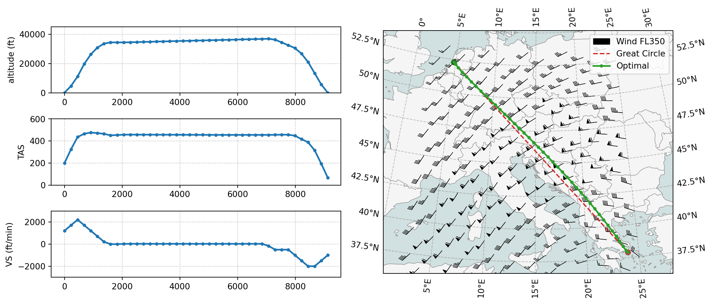
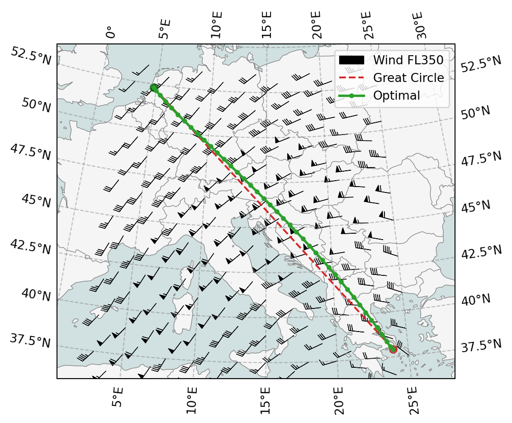
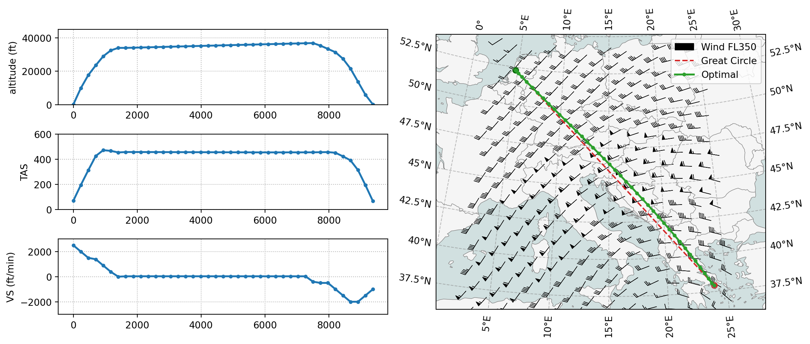

import fastmeteo
import numpy as np
import pandas as pd
import openap
from openap import top
import warnings
warnings.filterwarnings("ignore")9 🌪️ Wind optimal flights
Flight trajectory optimization considering wind conditions is crucial for efficient flight planning. Wind can significantly impact flight time, fuel consumption, and overall flight efficiency. For example, a favorable tailwind can help reduce flight time and fuel burn, while headwinds can have the opposite effect.
There are two main approaches to incorporate wind data when using ‘openap.top’ trajectory optimization:
The first approach uses the FastMeteo API to access ERA meteorological data stored in cloud-optimized Zarr format on Google Cloud Storage. This method provides efficient access to wind data through API calls without requiring large local datasets. It’s particularly suitable for single flight optimizations where direct data access is preferred.
The second approach works with pre-downloaded GRIB files from ECMWF or GFS sources. This method is more suitable for batch processing number of flights with larger RAM resources, though it requires downloading and storing weather data files locally.
9.1 Obtaining wind with fastmeteo
It is also possible to include 3D or 4D wind data in the optimization. The following code provides an example of such a use case. Note that the wind data is obtained using fastmeteo library in this example.
actype = "A320"
origin = "EHAM"
destination = "LGAV"
m0 = 0.85 Next, we need to get an example wind field data using the fastmeteo library. Note the selected ERA5 data will be cached temporarily at /tmp/era5-zarr.
actype = "A320"
origin = "EHAM"
destination = "LGAV"
# initial mass as the faction of maximum takeoff mass
m0 = 0.85
# get the boundary of the wind field
o = openap.nav.airport(origin)
d = openap.nav.airport(destination)
latmin = round(min(o["lat"], d["lat"])) - 2
latmax = round(max(o["lat"], d["lat"])) + 2
lonmin = round(min(o["lon"], d["lon"])) - 4
lonmax = round(max(o["lon"], d["lon"])) + 4
# create the and flatten the wind grid
latitudes = np.arange(latmin, latmax, 0.5)
longitudes = np.arange(lonmin, lonmax, 1)
altitudes = np.arange(1000, 46000, 2000)
timestamps = pd.date_range("2021-05-01 08:00:00", "2021-05-01 11:00:00", freq="1H")
latitudes, longitudes, altitudes, times = np.meshgrid(
latitudes, longitudes, altitudes, timestamps
)
grid = pd.DataFrame().assign(
latitude=latitudes.flatten(),
longitude=longitudes.flatten(),
altitude=altitudes.flatten(),
timestamp=times.flatten(),
)
# obtain the wind based on the grid
fmg = fastmeteo.Grid(local_store="/tmp/era5-zarr")
meteo_data = fmg.interpolate(grid)init local zarr from google arco era5, hour: 2021-05-01 08:00:00
syncing zarr from google arco-era5, hour: 2021-05-01 09:00:00
syncing zarr from google arco-era5, hour: 2021-05-01 10:00:00
syncing zarr from google arco-era5, hour: 2021-05-01 11:00:00Let’s take a look at the meteorological data we got:
meteo_data.head()| latitude | longitude | altitude | timestamp | u_component_of_wind | v_component_of_wind | temperature | specific_humidity | |
|---|---|---|---|---|---|---|---|---|
| 0 | 36.0 | 1 | 1000 | 2021-05-01 08:00:00 | 4.133623 | 3.570823 | 287.546767 | 0.006717 |
| 1 | 36.0 | 1 | 1000 | 2021-05-01 09:00:00 | 5.019323 | 2.913781 | 288.905607 | 0.006309 |
| 2 | 36.0 | 1 | 1000 | 2021-05-01 10:00:00 | 6.375478 | 1.566804 | 289.427981 | 0.005825 |
| 3 | 36.0 | 1 | 1000 | 2021-05-01 11:00:00 | 6.242283 | 0.733652 | 290.577190 | 0.005545 |
| 4 | 36.0 | 1 | 3000 | 2021-05-01 08:00:00 | 8.573422 | 4.150122 | 282.324727 | 0.006347 |
Before passing this wind field to the optimizer, we need to format it correctly. The wind data needs to be in pandas.DataFrame with the following columns: - ts: timestamp in seconds, with 0 representing the time of departure of the flight - latitude: latitude of all the grid points - longitude: longitude of all the grid points - h: height of the grid points, in meters - u: u component of the wind for each grid point, in m/s - v: v component of the wind for each grid point, in m/s
wind = (
meteo_data.rename(
columns={
"u_component_of_wind": "u",
"v_component_of_wind": "v",
}
)
.assign(ts=lambda x: (x.timestamp - x.timestamp.iloc[0]).dt.total_seconds())
.eval("h=altitude * 0.3048")
)[["ts", "latitude", "longitude", "h", "u", "v"]]
wind.head()| ts | latitude | longitude | h | u | v | |
|---|---|---|---|---|---|---|
| 0 | 0.0 | 36.0 | 1 | 304.8 | 4.133623 | 3.570823 |
| 1 | 3600.0 | 36.0 | 1 | 304.8 | 5.019323 | 2.913781 |
| 2 | 7200.0 | 36.0 | 1 | 304.8 | 6.375478 | 1.566804 |
| 3 | 10800.0 | 36.0 | 1 | 304.8 | 6.242283 | 0.733652 |
| 4 | 0.0 | 36.0 | 1 | 914.4 | 8.573422 | 4.150122 |
Last, we can run the optimization with the wind field and visulize the result:
import matplotlib.pyplot as plt
optimizer = top.CompleteFlight(actype, origin, destination, m0)
optimizer.enable_wind(wind)
flight = optimizer.trajectory(objective="fuel")
top.vis.trajectory(flight, windfield=wind, barb_steps=15)
plt.show()
If you only want to visualize the map:
top.vis.map(flight, windfield=wind, barb_steps=15)
plt.show()
9.2 Using grid wind files
You can also optimize the trajectory with grid atmospheric data, for example, grib or nc files downloaded from the ECMWF or GFS. In TOP, there is a built-in function top.tools.read_grids() that can be used to process grid data files into a DataFrame for the optimizer.
# read the downloaded ERA5 grib data, the arguments can be a list of files.
wind = top.tools.read_grids("tmp/era5_2021-05-01_0800.grib")
optimizer = top.CompleteFlight(actype, origin, destination, m0)
optimizer.enable_wind(wind)
flight = optimizer.trajectory(objective="fuel")
top.vis.trajectory(flight, windfield=wind, barb_steps=25)
plt.show()Ignoring index file '/home/junzi/arc/workspace/website/openap.dev/optimize/tmp/era5_2021-05-01_0800.grib.5b7b6.idx' incompatible with GRIB file
Since the grib data from a similar time frame was downloaded, we can observe that the result is similar to the one from the previous section. The advantage is that the code is relatively simple compared to the previous example, which used fastmeteo to download data that covers the region of the flights.
However, this approach requires a large quantity of grid data to be downloaded first. The read_grids() function also loads the entire grid files into RAM, which can be memory intensive if many grid files are loaded.